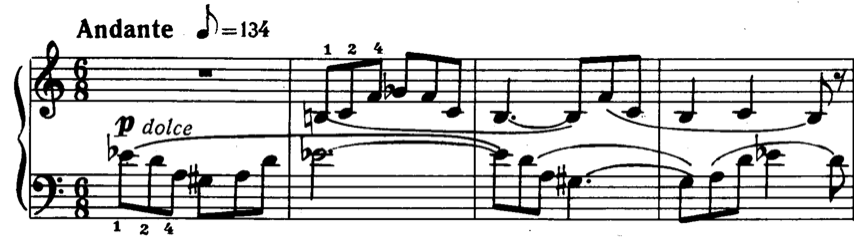
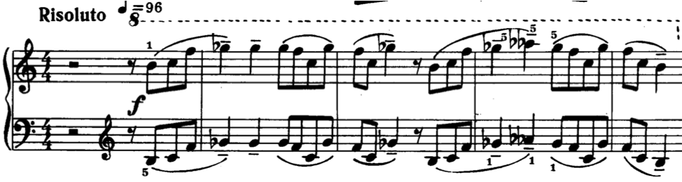
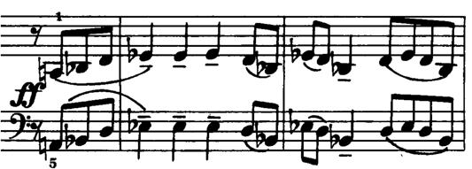

Open Music Theory：繁體中文版
以調式、音階與音集分析
重點整理
到目前為止，我們主要在定義調式、音集及其特性。但要用這些材料分析音樂，不能只知道術語；本章提供一些從理論走向實作的方向。
本書從多種角度討論調式，也可參閱〈自然音調式與半音「音階」入門〉的一般介紹、爵士篇〈和弦—音階理論〉、流行音樂篇〈調式圖式〉，以及20、21世紀音樂篇〈自然音調式〉。
查看英文原文
Key Takeaways
So far, most of our discussion has focused on defining modes, collections, and their properties. As always, there is much more to analyzing with these materials than simply knowing terms. This chapter provides some guidance on how to go from theory to practice.
Please note that this book covers modes from many different angles. For more information on modes, check Introduction to Diatonic Modes (general), Chord-Scale Theory (jazz), Modal Schemas (pop), and Diatonic Modes (20th/21st-c.).
理論上的考量
面對一首新作品，你感覺它值得從調式角度分析：它顯然不是共通寫作時期意義下的「調性」音樂，卻也不像「無調性」、「序列」等類型。該如何辨認所用調式，再據此提出分析觀察？20世紀音樂的調式選擇更多，樂譜也可能沒有調號或其他能快速辨認調式的線索，因此尤其需要從音樂本身的特徵來判斷。
先回顧定義調式時，可以考慮的幾個面向：
- 具有特定音程關係的一組音，例如C、D、E、F、G、A、B。
- 作為主要參照點的主音或終止音，例如C。
- 其他重要性的階序，例如屬音、下屬音。
- 旋律形態與音域。
第1項提醒我們，調式可以移位。介紹早期調式時，常使用白鍵位置，例如以D為主音的多利安；但在20世紀音樂中，也很容易遇到E多利安、D弗里吉安等其他位置。因此才會有「D調式移到G上」這種令人困惑的說法。也別忘了，調式音樂可以含有半音變化音，不必每個音都在該音階內。問題是：出現多少例外，才算多到需要重新考慮這個調式解讀？
第2項有助於區分第1項帶來的各種可能。若只使用白鍵音，哪個白鍵才是調式的終止音？任何音樂參數都可能支持某個音作為主音；可先採用常見的提示：「最先、最後、最響、最長」（Cohn 2012，47頁，承自Harrison 1994，75頁起）。在這些面向占優勢的音，往往更突出。樂句是否常從某個音開始、在它結束，或以其他方式強調它，例如置於強拍，或保留給旋律輪廓的最高點？
第3項也涉及這個難題。例如在調性音樂中，sol[latex](\hat5)[/latex]可能比do[latex](\hat1)[/latex]更常出現，因為它同時屬於主和弦與屬和弦。20世紀調式中，可能具有階序重要性的音更多，讓問題變複雜，卻也能幫助我們區分角色：「最先」和「最後」的可能是主音，「最響」和「最長」的則可能是屬音。此處也可以採用比「屬音」較少帶有調性預設的名稱；例如前章的教會調式，就有發揮類似作用的「吟誦音」（tenor／reciting tone）。
如此強調特定音高有許多理由。與20世紀音樂有關的一項是特徵音，例如利底安的fi[latex](\uparrow\hat4)[/latex]，或弗里吉安的ra[latex](\downarrow\hat2)[/latex]；另一項則是建立音高類中心。對習慣共通寫作時期調性的聽者而言，利底安的升高第四級——例如以C為中心時的F♯——很容易被聽成屬調G大調的導音。其他寫法近似調性、卻標為「利底安調式」的作品，可能因此顯得模糊。可以聽聽貝多芬弦樂四重奏Op.132中的〈神聖感恩之歌〉（1825），以及布魯克納《Os Justi》（義人的口，1879），思考自己的判斷。
音域是區分教會調式正格與變格的基本依據；在許多其他音樂中，音域與旋律形態也同樣是界定調式的重要面向。
查看英文原文
In Theory
So, you’re faced with a new piece of music, and you get the sense that it might be worth considering a modal view. It sure isn’t "tonal" in the common-practice sense, but neither does it seem "atonal," "serial," or the like. How do you go about identifying the modes used, and making analytical observations on that basis? 20th-century music has a wider range of possible modes and may not have a key signature or any other notational shortcut for identifying the mode. As such, it’s especially important to be able to identify modes from musical cues.
Firstly, let’s review some of the different considerations that can go into the definition of a mode:
- A collection of pitches in a particular intervallic relationship (e.g., C, D, E, F, G, A, B)
- A tonic or final that acts as a primary or referential point (e.g., C)
- Further hierarchical levels of importance (such as the dominant/subdominant)
- Melodic shapes and ranges
No. 1 reminds us that modes can be transposed. While we often present the early modes in their "white-note" transposition (with dorian on D, for instance), in 20th-century music, you can just as easily have them on other pitches such as dorian on E and phrygian on D. This leads to the frankly confusing terminology "D mode on G." Don’t forget that you can also have chromatic notes in modal music—not every pitch used needs to be in the scale. So the question is, how many exceptions are too many?
No. 2 helps to separate all the possibilities that No. 1 throws into the mix. If you only have white notes, which of those white notes is the modal final? Any and all musical parameters might contribute to the case for one of those pitches as tonic; for a useful starting point, try the widely applicable "first, last, loudest, longest" maxim (Cohn 2012, 47, after Harrison 1994, 75ff.). Pitches that dominate in those ways tend to be more salient. Do phrases tend to start and/or end on a certain pitch, or do they emphasize that pitch in other ways, perhaps with strong metrical positions or by reserving it for the top of the melodic contour?
No. 3 also speaks to this difficulty. For instance, in tonal music, you may find more instances of sol [latex](\hat5)[/latex] than do [latex](\hat1)[/latex], since it fits in both the tonic and dominant chords. 20th-century modes complicate this with a more diverse set of candidates for hierarchical importance, but this can also help us to unpick the different roles. "First" and "last" might be your tonic, while the dominant may be "loudest" and "longest." We might also use a less loaded term than "dominant" here. For instance, the church modes (discussed in a previous chapter) had a "tenor" or "reciting tone" in an analogous role.
There are many reasons for emphasizing specific pitches in this way. One reason relevant to 20th-century music is the notion of color notes, like fi [latex](\uparrow\hat4)[/latex] in lydian or ra [latex](\downarrow\hat2)[/latex] in phrygian. Another reason is to establish a pitch class center. For listeners accustomed to common-practice tonality, the lydian fourth (e.g., F♯ in C major) can very easily become a leading tone in the dominant (G major). Otherwise tonal works written "in the lydian mode" can be highly ambiguous in this respect. Consider what you make of Ludwig van Beethoven’s "Heiliger Dankgesang" from the Op. 132 quartet (1825) and Anton Bruckner’s Os Justi (1879) to this effect.
Range considerations were fundamental to the definition of church modes in terms of authentic vs. plagal forms, and this has been a key consideration for defining modes in many other types of music, as have melodic shapes.
實際分析
上述考量有助於辨認主要調式，但分析者如何利用這些資訊，提出有說服力的作品詮釋？辨認調式時遇到的難題，本身就可能成為詮釋的一部分。以下幾點，可以幫助我們從辨認走向理解：
- 首先，要提出調性解讀有多容易？作品的結構是明白呈現，還是隱藏得很深？這對作品的情緒傾向可能意味著什麼？
- 你能描述這個調式的一般性格，以及它在本曲的用法嗎？升高的利底安第四級是否令人「振奮」，甚至帶有「嚮往」？弗里吉安的降低第二級是否可能像在「哀嘆」？
- 各調式呈現得有多清楚、彼此有多分明？從一個轉到另一個時，是否保有共同音，甚至相同終止音？如同調性音樂，調式之間的「轉調」也可部分依此判斷遠近。
- 調式的特性與分布如何連到更大的音樂安排？調式改變的時刻，是否也因其他因素而像是段落邊界？
看看下面三個片段，取自巴爾托克〈來自峇里島〉。全曲一直使用同一調式，還是有所改變？哪些音在調式內、哪些在外？是否出現明確的調式終止音？有沒有同時結合兩種調式的時刻？圖片之後提供一些想法；先形成自己的判斷，再往下對照。

- Andante＝行板；
- 八分音符＝134；
- p＝弱，dolce＝柔美地。
1、2、4等小數字是指法。
- 6/8拍中，右手使用B、C、F、G♭，左手使用D、E♭、G♯、A；
- 兩手各有1:5交替的音程結構，原譜的連結線與分句保持原樣。

- Risoluto＝堅決地；
- 四分音符＝96；
- f＝強；
- 上方8與虛線表示右手升高八度演奏。
1、5等數字是指法。
兩手圍繞B、C、F、G♭，後段有A𝄫（重降A，與G同音），是G♭上方半音。
不要把兩個降記號或八度線當成另換一個音集的充分證據。

- ff＝很強；
- 音符上的短橫線為保持音（tenuto）記號；
- 1、5等數字是指法。
此段使用A、B♭、D、E♭，與開頭左手相比，保留A、D、E♭，將G♯換成B♭。
原圖左側承接前文而未重畫全部譜號，需連同本章前兩圖與分析閱讀。
第一個片段的調式與終止音，都帶有巧妙的模糊性。若把兩手的音合在一起，正好形成八音音集；若分開看，則各自是經常與巴爾托克相聯繫的1:5距離模型調式，也就是原型為(0167)的集合類。這些關係具有鮮明的巴爾托克式對稱，卻很難感到某個單一調式終止音逐漸浮現。
後兩個片段在段落首個強拍上，都有強烈的主音抵達感，分別暗示G♭與E♭是中心。不過，請注意它們的音與開頭有多接近：先是[B, C, F, G♭]，恰好與開頭右手相同。你有發現這種解讀中的那個「半音變化音」嗎？A𝄫可以解釋為半音上鄰音，不真正屬於該調式音集。
稍後則出現[A, B♭, D, E♭]，是開頭左手音集的近似變體。這項變化讓作品從開頭的模糊感，走向頗有E♭大調意味的段落；但這種感受很快又被消解，作品回到起初的技法與情緒狀態。
於是，我們既看見統一與變化之間的平衡，也看見全曲發展的方向。
查看英文原文
In Practice
The above considerations have to do with identifying a prevailing mode, but how does an analyst use this information to create a compelling interpretation of the piece? Well, the challenge of coming up with a modal reading can become part of that interpretation. Here are some starting points for pivoting from identification to interpretation:
- Firstly, how easy was it to come up with a tonal reading? Is this a piece with its structure on display or deeply hidden? What might that say about the emotional valence of the work?
- Can you characterize the mode in general and its use in this piece? Is the raised lydian fourth "exciting" or even "aspirational"; is the phrygian second perhaps "lamenting"?
- How clearly and separately are these modes set out? When we move from one mode to another, are there common tones, or even a common final? Just like in tonality, "modulations" among modes can be regarded as close or remote, partly on this basis.
- How are the properties and distribution of modes related to wider considerations? Do mode changes align with moments that seem like section boundaries for other reasons?
Consider the three moments below, which come from Béla Bartók’s From the Island of Bali. Is the same mode in operation throughout, or does it change? What pitches are in/out of the mode(s)? Does a modal final present itself? Are there any moments where two modes are combined? Some suggestions follow the images, so decide on what you think before scrolling down to compare notes.
The first case is wonderfully ambiguous in relation to both mode and final. If you put the hands together, the pitches constitute a neat octatonic mode, but if you keep them apart, then it’s the 1:5 distance model mode often associated with Bartók, also known as set class (0167). There’s good Bartókian symmetry in all of this, and very little sense of a single modal final emerging.
In the latter two cases, there is a strong tonic arrival on the first downbeat, suggesting G♭ and E♭ as the respective tonics for these sections. However, notice how closely the pitches relate to the opening. First we have [B, C, F, G♭], which were the exact pitches of the right hand at the start. (Do you spot the one "chromatic" note in this reading? A𝄫 could be interpreted as a chromatic upper neighbor that doesn’t really fit the mode.)
Later we have [A, B♭, D, E♭], which are a close variant on those of the left hand. This change indicates a move from that opening ambiguity to a passage quite neatly redolent of E♭ major, which is swiftly undone as the piece goes back to the technical and emotional place where it started.
So we have a balance between unity and variety, as well as trajectory for the piece overall.
調式、音集與音樂意義
這些調式也都可能引起音樂以外的詮釋聯想。
例如，本章雖著重20世紀的調式寫作，但調式也出現在共通寫作時期的調性音樂中，常讓人回想它們所源出的、更早的前調性音樂。貝多芬《莊嚴彌撒》（1824）〈信經〉中使用多利安，便是一例。
作曲家不只回顧歷史，也向外探索，刻意透過調式，在音樂廳中喚起民間或異國音樂。這可能表現文化欣賞，也可能是文化挪用。20世紀之交對異國情調、西班牙—阿拉伯題材的熱衷，往往只是使用弗里吉安的ra[latex](\downarrow\hat{2})[/latex]，缺少更深入的處理；本章作者認為這比較偏向後者。同樣可以觀察幾位作曲家所寫、名義上的匈牙利音樂：布拉姆斯從外部觀看這個文化；李斯特熱衷於強調匈牙利根源，作為個人形象的一部分；李給替則取材自自己的文化。
特定調式也會因其結構特性，形成某些意義聯想。我們已看過全音音集缺少明確根基的特性，這很適合引發特定的音樂以外聯想，例如德布西〈Voiles〉（1909）。八音音集則常被用來表現異國、超越時間或魔法般的題材，例如柴可夫斯基《胡桃鉗》（1892）〈糖梅仙子之舞〉中的鋼片琴琶音。
最後，像所有意義問題一樣，除了音樂材料本身與作曲家意圖，詮釋終究還涉及你自己的聯想與推論。
- Cohn, Richard。2012。《Audacious Euphony: Chromaticism and the Consonant Triad’s Second Nature》（大膽的悅耳聲響：半音化與協和三和弦的第二天性）。紐約：Oxford University Press。
- Harrison, Daniel。1994。《Harmonic Function in Tonal Music》（調性音樂中的和聲功能）。芝加哥：University of Chicago Press。
- Persichetti, Vincent。1961。《Twentieth-Century Harmony》（二十世紀和聲）。紐約：W. W. Norton。
媒體來源與授權資訊
- Bartok1：巴爾托克譜例片段1。
- Bartok2：巴爾托克譜例片段2。
- Bartok3：巴爾托克譜例片段3。
查看英文原文
Modes, Collections and Musical Meaning
All of these modes come with extramusical interpretive associations.
For instance, we’ve been focusing on 20th-century instances of modal writing, but they do appear in common-practice tonal music, often with associations back to the pre-tonal music from which those modes came: for example, Beethoven’s use of dorian in the "Credo" of his Missa Solemnis (1824).
In addition to looking back, composers have also looked out, deliberately invoking folk and/or foreign musics in the concert hall by the use of their mode. As always, this can be indicative of cultural appreciation or appropriation. The mania for the exotic, Hispano-Arabic topic around the turn of the 20th century (rarely more sophisticated than the use of the phrygian ra [latex](\downarrow\hat{2})[/latex] errs on the side of the latter. Likewise, we can observe the nominally Hungarian music by composers like Brahms (looking at that culture from outside), Liszt (keen to emphasize his own Hungarian roots as part of his brand), and Ligeti (drawing on his own culture).
Specific modes also attract meanings from their inherent properties. We have already seen the whole-tone modes' un-rootedness, which lends itself most naturally to certain extramusical associations, as showcased in Claude Debussy’s "Voiles" (1909). Likewise the octatonic is often invoked as some kind of exotic, timeless, magical topic, as in the celesta arpeggios of "Dance of the Sugar Plum Fairy" from Pyotr Ilyich Tchaikovsky's The Nutcracker (1892).
Finally, and as always with meaning, apart from the materials itself and the composers’ intentions, it ultimately comes down to your associations and inferences.
- Cohn, Richard. 2012. Audacious Euphony: Chromaticism and the Consonant Triad’s Second Nature. New York: Oxford University Press.
- Harrison, Daniel. 1994. Harmonic Function in Tonal Music. Chicago: University of Chicago Press.
- Persichetti, Vincent. 1961. Twentieth-Century Harmony. New York: W. W. Norton.
- Analyze Lili Boulanger's resplendent Hymne au Soleil. Identify modes and collections used, along with related techniques and materials, and linking these (where you consider it appropriate) to possible "meanings" of the work. Scores can be found on IMSLP and MuseScore. Both include the original French text and an English translation in the underlay.
Media Attributions
- Bartok1
- Bartok2
- Bartok3